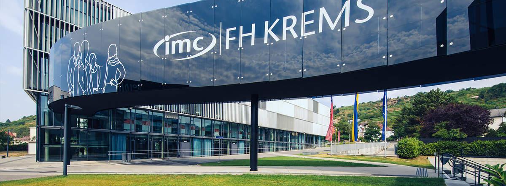

Practical Work II - Morgan Nihlmar

My name is Morgan Nihlmar, I am a student from Sweden but I study Informatics in Krems, Austria. It is a small student city of about 15,000 people, 30 minutes from Vienna. Curently I'm on exchange at Universidad Francisco de Vitoria in Madrid. I study Informatics /Computer Science because I was always good with computers as a kid and interested in learning more. However it has defintely challenged me so far and I have had to learn a lot and catch up from my high school education, which was more social studies centered. As a kid I lived in Malaysia and China, and always grew up learning in English and this is why I like to be in different countries, continuing to learn and work in English and experiencing new things.
Here is the campus I study at in Austria:
